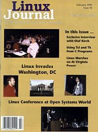

Shutdown Archive web server
Search:
Linux Journal
Issue #10/February 1995

Features
A Conversation with Olaf Kirsch
The author of the Network Administrator's Guide tells us a little something about his life and the NaG
Using Tcl and Tk from Your C Programs
by Matt Welsh
This month we'll show you how to use Tcl and Tk from your C programs.
Linux Conference at Open Systems World/FedUNIX 1994
by Belinda Frazier
A remarkable conference with developers, support persons, resellers and end-users.
SCADA-Linux Still Hard at Work
by Vance Petree
Time marches on, Linux marches on, and one of the cardinal rules of the universe manifests itself.
News & Articles
Report on Comdex 1994
by Belinda Frazier
What Your DOS Manual Doesn't Tell You About Linux
by Liam Greenwood
What's GNU?
by Arnold Robbins
Columns
Letters to the Editor
Stop the Presses
by Phil Hughes
New Products
Kernel Korner
: Block Device Drivers: Interrupts
by Michael K. Johnson
Archive Index
Shutdown Archive web server
Search:
Copyright © 1994 - 2018
Linux Journal
. All rights reserved.